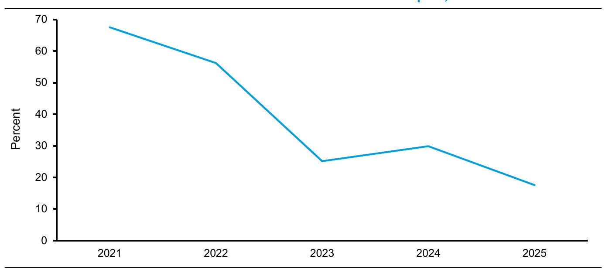
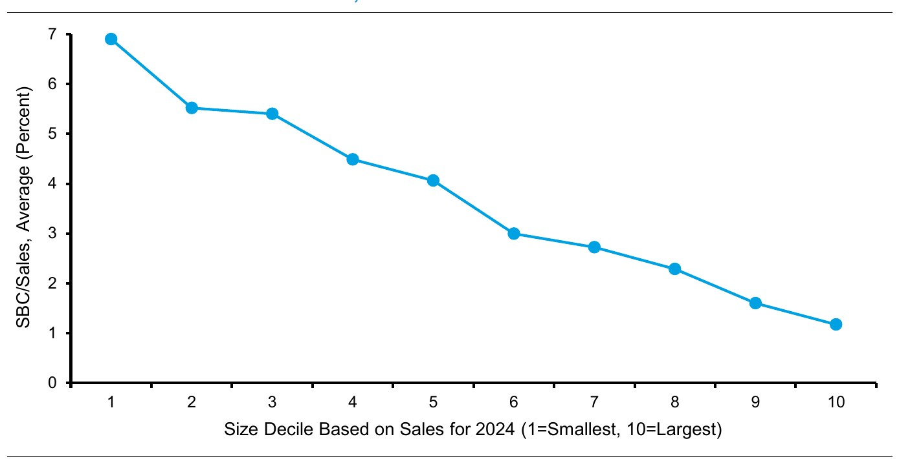
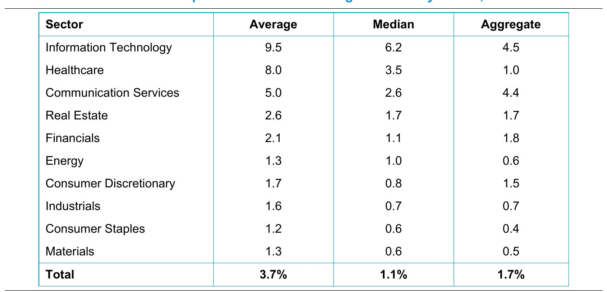
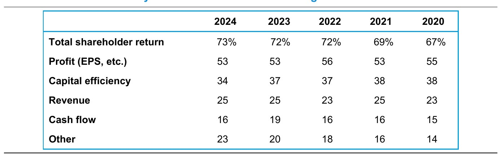
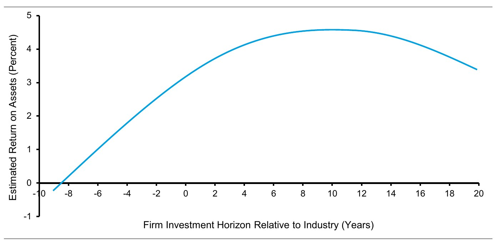

← 站主随笔 · 资本配置 · 分章阅读
资本配置：五条原则，看管理层会不会把钱花对地方 · 中英对照 · 第 4 / 9 章
在一个理想世界里，企业高管会配置资本，以最大化长期每股价值。但出于多数情况下可以理解的原因，有大量证据表明他们未能达成这一目标。151
In an ideal world, corporate executives would allocate capital to maximize long-term value per share. But, for reasons that are mostly understandable, there’s a lot of evidence they fall short of this objective.在 2022 年向美国金融协会所作的会长演讲中，杜克大学金融学教授 John Graham 对财务高管实际上如何决策做了很好的总结，其依据是他长达数十年的调查问卷回答：152
基于这些发现，我们勾勒出一个四部分框架，用于评估管理团队资本配置技能的质量。我们从过去的资本配置行动开始。正如沃伦·巴菲特所指出的：“在任职十年之后，一家每年留存相当于其净值 10% 盈利的公司的 CEO，将对这家公司运转中的全部资本中超过 60% 的部署负责。”154
As Warren Buffett notes, “After ten years on the job, a CEO whose company annually retains earnings equal to 10% of net worth will have been responsible for the deployment of more than 60% of all the capital at work in the business.”接下来，我们建议研究一家公司的投入资本回报率（ROIC）和增量投入资本回报率（ROIIC）。第三部分是对一家公司的公司治理与激励机制的仔细研究。最后，我们考察管理层的过往决策与资本配置的五条原则相比表现如何。
我们从考察管理层过去如何花钱开始评估。我们分别考察投资（并购（M&A）、投资性销售、一般及行政费用（剔除研发）（investment SG&A ex-R&D）、资本开支（capex）、投资性研发（R&D）和营运资本）与派付政策（股息、股份回购和偿债）。
一家企业的价值是未来自由现金流（FCF）的现值，自由现金流定义为税后净营业利润（NOPAT）减去对未来增长的投资。在传统算法中，NOPAT 由销售额与销售增长、营业利润率以及现金税率驱动。
投资由营运资本的变动、扣除折旧后的资本开支，以及扣除资产剥离后的收购驱动。注意，在传统算法中，投资性 SG&A（剔除研发）和投资性研发并不资本化。我们对相关数据做了这样的调整。但无论是否做这些调整，自由现金流都是一样的。
阿尔弗雷德·拉帕波特（Alfred Rappaport）把上述科目称为“价值驱动因素”，因为它们决定了在现金流折现模型中驱动价值的自由现金流。155 拉帕波特把投资类价值驱动因素定义为：销售额每变动 US$1，公司投向各项用途的百分比。这使我们能够对这些指标进行比较。
例如，如果一家公司的净营运资本在某一年增长 US$200，而销售额增长 US$1,000，那么增量营运资本比率为 20%（US$200 ÷ US$1,000）。如果资本开支为 US$500、折旧为 US$200，则增量固定资本比率为 30%（[US$500 - US$200] ÷ US$1,000）。我们可以用同样的方法计算“增量并购减去资产剥离”或其他任何投资的价值驱动因素。
For instance, if a firm’s net working capital grows by $200 in a given year and its sales grow by $1,000, the incremental working capital rate is 20 percent ($200 ÷ $1,000). If capital expenditures are $500 and depreciation is $200, the incremental fixed capital rate is 30 percent ([$500 - $200] ÷ $1,000).这使我们能够研究一家公司过去实际上是如何投资的。我们能追溯得越久越好，同时记录下当时负责资本配置决策的是哪些高管是有用的。以下是微软（一家跨国科技公司）截至 2025 财年的五个年度的数据：156
这些数字让我们立刻看到公司把钱投在了哪里。在这种情形下，净营运资本是现金的来源。资本开支是现金的最大用途，其次是并购和内部生成的无形资产。
以下是思科系统（一家数字通信公司）截至 2025 财年的过去五年的数据：
净营运资本对思科而言同样是现金来源。但在这里我们看到，公司净投资的绝大部分流向并购，对内部生成无形资产的投资为正，而公司的资本开支低于维持性水平。业务分析师自然会想弄清管理层如何做并购决策。对过往交易结果的复盘同样是恰当的。
But here we see the vast majority of the company’s net investment is going to M&A, investment in internally-generated intangibles is positive, and that the company’s capital expenditures are below the maintenance level. A business analyst would logically seek to understand how management makes its M&A decisions. A review of the results from past deals would also be appropriate.审视过去的资本配置决策也让我们能够找到拐点。例如，微软的资本开支急剧上升，从 2022 财年到 2025 财年增长了两倍，以支持其云计算平台 Azure 的增长。亿滋国际（Mondelez International，一家跨国食品和饮料公司）通过把现金转换周期从 2013 年的 39 天降至 2024 年的 -30 天，释放了估计 US$60 亿的净营运资本。此类变化应当纳入战略分析，用以评估一家公司未来的投资和利润。
派付政策同样重要。我们已经确立：股息一旦开始派发就具有粘性，其维持的重要程度与对业务的投入相当。股份回购则波动更大，我们希望理解其背后的动机。
回到我们的例子。截至 2025 财年的五个年度，微软的股东回报率（shareholder yield）为 1.8%。公司向股东返还了 US$2,090 亿，其中 48% 以股息形式、52% 以净股份回购形式。这些年份中股息支付金额的最高值与最低值之差为 US$76 亿，而净回购的同一差额为 US$156 亿。
For the five years ended fiscal 2025, Microsoft’s total shareholder yield was 1.8 percent. The company returned $209 billion to shareholders, 48 percent in dividends and 52 percent in net share buybacks. The difference between the highest and lowest amount of dividends paid in those years was $7.6 billion, whereas the same difference for net buybacks was $15.6 billion.思科截至 2025 财年的五个年度的股东回报率为 5.5%。公司向股东返还了 US$590 亿，其中 54% 以股息形式、46% 以净股份回购形式。这些年份中股息支付金额从最高到最低的区间仅为 US$3 亿，而净回购的离散度为 US$49 亿。
我们需要在一家公司的资本结构这一背景下评估投资与派付。大多数公司会维持其目标债务权益比，即便环境显示作出调整是合理的。理解这些决策背后的理由与动机至关重要。我们也希望看到管理层的决策过程是否与创造长期每股价值相一致。
归根结底，高管是有血有肉的人，并不总是自律和理性的。一个典型例子是：尽管大多数大型公司表示它们总是或几乎总是使用净现值法评估项目或收购，但申请资源的业务部门负责人的声誉同样重要，高管的“直觉”也是如此。157
As a case in point, while most large companies say they always or almost always use the net present value rule to evaluate projects or acquisitions, the reputation of the division manager requesting resources is also important, as is senior management’s “gut feel.”管理层的目标应当是通过进行那些回报率超过资本机会成本的投资来创造价值。ROIC 是衡量一家公司是否达成这一目标的一种方式。
我们的报告《投入资本回报率：如何计算 ROIC 以及处理常见问题》（Return on Invested Capital: How to Calculate ROIC and Handle Common Issues）与《ROIC 与无形资产：无形资产调整如何影响 ROIC 之观察》（ROIC and Intangible Assets: A Look at How Adjustments for Intangibles Affect ROIC）详细说明了如何计算 ROIC。158 其中还讨论了如何处理内部生成的无形资产投资——这类投资在资产负债表上体现为资产，然后在利润表上摊销。
ROIC 的分子是 NOPAT，与我们在自由现金流计算中看到的数字相同。NOPAT 是企业的现金盈利，不含债务利息支出或超额现金利息收入的影响。因此，无论公司选择何种债务与权益的组合来为该企业融资，NOPAT 都保持不变。
投入资本是公司产生 NOPAT 所需的净资产；等价地说，它是公司用来为这些资产融资的债务与权益的组合。每年的投资决定了投入资本的变动。这样我们就能看到自由现金流与 ROIC 之间的联系：投资从 NOPAT 中扣除，得到自由现金流；NOPAT 是 ROIC 的分子；而投入资本是累计的投资。
Investment is subtracted from NOPAT to determine free cash flow. NOPAT is the numerator of ROIC. And invested capital is accumulated investment.ROIC 高于资本成本意味着一家公司在创造价值。例如，假设一家公司的 NOPAT 为 US$150，投入资本为 US$1,000，资本成本为 7%。那么该公司 15% 的 ROIC（US$150 ÷ US$1,000）将大大高于 7% 的资本成本。同样投入资本但只赚 US$50的企业，ROIC 为 5%（US$50 ÷ US$1,000），低于资本成本。
That company’s ROIC of 15 percent ($150 ÷ $1,000) would be well in excess of the 7 percent cost of capital. A business with the same invested capital earning $50 would have an ROIC of 5 percent ($50 ÷ $1,000), below the cost of capital.图 25 展示了经内部生成无形资产调整与未经调整的 ROIC。数据剔除了金融行业的公司，覆盖 1970 年至 2024 年。基于调整后的算法，对于销售额至少 US$1 亿（按 2024 年美元计）的公司，约有一半的观测值的 ROIC 超过资本成本。
市场看的是未来，沉没成本不决定未来价值。因此，我们希望理解边际上的变化。增量投入资本回报率（ROIIC）使我们能够做到这一点。ROIIC 衡量的是 NOPAT 的变动相对于投入资本变动的比例。这一计算忽略了沉没成本，但它做了一个很强的假设：现有投入资本的回报率保持不变。这往往并不现实。
ROIIC measures the change in NOPAT relative to the change in invested capital. While the calculation ignores sunk costs, it makes the strong assumption that the return on the existing invested capital is unchanged. This is often unrealistic.ROIIC 的计算公式如下：
增量投入资本回报率（ROIIC）＝（第 1 年 NOPAT − 第 0 年 NOPAT）÷（第 0 年投入资本 − 第 -1 年投入资本）
ROIIC 试图量化的是：某一年所做的投资，如何影响下一年的 NOPAT。
ROIC 和 ROIIC 的一个局限是，结果可能非常嘈杂。这一点对于那些偶尔才进行大额投资的公司尤其如此，与那些持续稳定投资的公司相比更是如此。这也是为什么 ROIC 通常不适合用来评估并购。交易一旦完成，分母——投入资本——立即上升，而分子——NOPAT——只会在一段时间内才反映该交易的现金流。
This is why ROIC is typically a poor way to assess M&A. Once the deal is done, the denominator, invested capital, goes up right away while the numerator, NOPAT, reflects the deal’s cash flows only over time.举一个例子：微软以 US$690 亿收购电子游戏公司动视暴雪（Activision Blizzard）。该交易在 2024 财年完成，结果是微软传统口径的投入资本增加约 30%，而按内部生成无形资产调整后的投入资本从 2023 财年到 2024 财年膨胀了 20% 以上。
缓和 ROIIC 波动的方法是按三年或五年期间计算。例如，三年滚动 ROIIC 取过去三年 NOPAT 的变动（第 3 年 NOPAT − 第 0 年 NOPAT），除以滞后的投入资本变动（第 2 年投入资本 − 第 -1 年投入资本）。微软从 2021 财年到 2025 财年的三年滚动 ROIIC 见图 44。

ROIIC 上升或处于高位，既可能意味着一项业务的资本效率正在改善，也可能意味着它正处在经营杠杆为正的时期。经营杠杆以 NOPAT 的变动除以销售额的变动来衡量，用以说明一项业务吸收固定成本的能力。经营杠杆可以为正也可以为负，且通常是暂时的。尽管如此，管理层和投资者对经营杠杆的识别存在时滞，这可能带来机会。
高管最终要对资本配置负责。因此，评估他们的动机与激励很重要。理想状态是一家公司拥有包括 CEO 和 CFO 在内的核心管理层，他们拥有“价值的北极星”。北极星之所以能提供可靠的方向感，是因为它在黑夜的天空中清晰可见，而且整夜乃至整年都保持稳定。
The ideal is a company that has senior leadership, including the CEO and CFO, who have a “North Star of value.” The North Star provides a dependable sense of direction because it is readily visible in the sky when it is dark and is stable throughout the night and year.没有北极星的高管，会被他们从股东、利益相关者、投资银行家和媒体那里听到的各不相同、有时相互冲突的观点所左右。而那些以创造长期每股价值的纪律为根基的高管，则能保持航向稳定，并利用他们对企业所掌握的非对称信息，为长期持股的股东谋利。
理解一家公司的主导目标——对公司根本上想要达成之事作出清晰表述——至关重要。这一目标指引着公司的文化、沟通、薪酬和资本配置，也应当揭示公司的时间跨度（时间视界）。公司治理是一套制衡机制，用来确保高管忠实地服务于公司的主导目标。159
主导目标通常聚焦于股东或利益相关者。近年来公司纷纷把重心转向利益相关者。我们认为这是一种伪选择。160 寻求构建长期股东价值的公司，必须照顾好其所有利益相关者，包括雇员、客户和供应商。创造长期价值同时也意味着尽量减少负面外部性，并与立法者和监管机构合作。
We believe this is a false choice.主导目标之所以重要，是因为它指引着高管面对不可避免的取舍时的决策。清晰的目标也为利益相关者提供了选择参与或退出与公司关系的基础，并让外部人士能够评价管理者的选择。
有意寻找致力于构建长期价值的公司的投资者，需要考虑代理成本（agency cost）。161 学者指出，代理成本在三个方面造成了管理者利益与股东利益之间的冲突。162
第一，对管理者最有利于提升价值的事，可能不同于对股东最有利于提升价值的事。一般来说，高管掌控的资源越多，获得的报酬就越高。例如，他们可能有动机去做那些毁损价值的并购交易，或者回避那些能够创造价值的资产剥离。
风险偏好是另一个潜在冲突来源。大多数投资者把一家公司的股票作为多元化投资组合的一部分持有，通常通过共同基金或交易所交易基金（ETF）。大多数高管的财富则主要投资于其所在公司的股票。因此，高管所追求的风险水平可能低于股东认为合适的水平。CFO 采取保守政策这一事实支持这一看法。
最后一个冲突领域涉及时间跨度。当薪酬计划的时间跨度短于投资者用来评估一项投资吸引力的时间跨度时，就会出现错配。例如，近 80% 的财务高管表示，他们愿意放弃一项创造价值的投资，以实现短期盈利。163
高管薪酬是使管理者与股东利益一致的一种方式。但设计一套为管理者提供恰当激励以创造长期价值的方案并不容易。我们可以从两个极端开始考察。
完全与价值创造无关的薪酬，从一开始就没有提供创造价值的激励。我们远远还没到那一步。美国前 100 家上市公司中，超过 60% 的 CEO 薪酬以股票期权或股票奖励及长期激励计划的形式发放。在美国前 3,000 家上市公司中，这类薪酬占总薪酬的一半以上。164
另一个极端是 CEO 拥有全部非公开股份。这本应消除人们对代理成本的担忧。但请注意投票权控制与经济所有权之间的区别。研究表明，采用双重股权结构的公司——即一类股票的每股投票权多于另一类——可能产生代理成本。165 创始人通常持有允许多重投票权的那一类股份，从而实质上确立了对公司的控制。
美国 CEO 薪酬的增长率一直远超普通员工薪酬的增长率，也远超整体经济增长。过去 40 年，CEO 的薪酬构成已从以工资和奖金为主，转向以股票为主。CEO 的财富对股价变化的敏感度越来越高。166 如今，美国前 100 家上市公司的普通 CEO，股价 1% 的变化会带来约 1.5% 的财富变化。167 向基于股份的薪酬转变看似降低了代理成本，但可能带来其他挑战。
第一个问题是，雇员薪酬的形式本身就会影响资本配置。这在股份回购上表现得最为直接。168 作为背景，美国公司在 2024 年报告的 SBC（股份支付）费用为 US$3,140 亿，股份回购总额为 US$1.1 万亿。如前所述，超过四分之三的 CFO 表示，对冲 SBC 造成的股权稀释是回购股票的重要或非常重要原因。
To put this in context, companies in the U.S. reported expense for SBC of $314 billion and gross share buybacks of $1.1 trillion in 2024. As noted earlier, more than three-quarters of CFOs said that offsetting dilution from SBC was an important or very important reason to buy back stock.图 45 展示了美国公司按规模排序的平均 SBC 占销售额的百分比。SBC 占销售额的百分比往往随公司规模变大而下降。规模最小的公司，SBC 平均约占销售额的 7%，而最大的公司只有约 1%。SBC 与销售额之比的中位数在绝对水平上更低，走势也类似。


SBC 的重要性也因行业而差异极大。例如，信息技术和医疗保健行业的 SBC 发行规模远高于材料行业和必需消费品行业（见图 46）。管理层应当脱离其薪酬政策，单独评估股份回购方案的价值。但现实中，公司把两者是绑在一起的。
SBC 是否有效地把管理层的注意力聚焦在长期业绩上，是一个争论激烈的话题。169 关于 CEO 薪酬驱动因素的各种竞争性理论——包括股东价值最大化、租金攫取以及其他制度性因素——在研究中都获得了一定的支持。170 但 SBC 实际上受到一系列因素的制约。
首先，公司的股价只是衡量公司业绩的一个粗糙指标。影响股价的其他因素——包括总体经济状况、利率变化、通胀预期和股权风险溢价——可能比公司经营结果更重要。这些外部因素大多不在管理层的控制范围内。171
其次，股票市场就投资机会、当前资本配置决策和过往资本配置决策向管理层提供的信息，在短期内可能非常嘈杂。172 我们在并购交易的最初市场反应中看到过这一点。这些反应平均而言方向正确、相对无偏，但也时不时会出错。这一问题又因很少有高管理解股票市场所反映的对未来财务业绩的预期而进一步加剧。173
Further, the information the stock market provides to managers regarding investment opportunities, current capital allocation decisions, and past capital allocation decisions can be very noisy in the short run.我们待会儿会回到这些考量上。但在此之前，我们可以看看公司最常用的绩效型长期激励指标。图 47 展示了由专注于高管薪酬的咨询公司 FW Cook 对标普 500 中最大的 250 家公司所做的年度调查在过去 5 年的结果。近年来，股东总回报（TSR）已成为首位的激励指标。其后的指标则与传统利润挂钩，例如每股收益（EPS）和资本效率。
TSR 位列榜首或许值得乐观。但仍需谨慎。如我们此前讨论的，TSR 可能成为实际股东回报的误导性衡量。这会在触发高管薪酬的条件与股东所获得的回报之间造成落差。
此外，只有当管理层懂得如何创造价值时，TSR 才具有相关性。在我们整个讨论中，我们看到过许多管理层的决策与构建长期价值相矛盾的例子。
最后，在决定 TSR 时，外部因素可能比公司特定的因素更重要。当 TSR 被当作绝对指标、而非相对于恰当基准的指标来使用时，它就会失效，因为它没有隔离出该公司的自身结果。
拥有恰当北极星的公司相信股价终将追随价值，因而致力于创造长期每股价值。在价格未能恰当反映价值的情形下，管理层可以改进与金融界的沟通，也可以通过买卖股票采取行动。还有充分的证据表明，那些清楚自己创造长期价值的使命、并有效传递这一信息的公司，能够吸引到优质股东。在这些情形下，由于股东的目标与期望同管理层的一致，股东更像是商业伙伴。174

激励性薪酬是公司治理结构的一部分，它支撑着主导目标。如果主导目标聚焦于创造长期每股价值，那么薪酬将具备一些支持审慎资本配置的特征。175
董事会应当为高管设计这样的薪酬：股票期权或限制性股票单位（RSU）以上市大盘或一组恰当的同业为基准进行指数化挂钩。指数化有助于削弱运气的成分；如果外部因素对同业与对本公司的影响相似，指数化就能隔离出技能本身的贡献。雇员的激励性薪酬应当与他或她能够控制的事情相关联。这会把享有基于股份薪酬资格的雇员范围缩小到那些能够影响股价的人。
大多数雇员对股价几乎没有个人影响力。因此，高管以及与经营单元打交道的一线员工的薪酬，应当基于该单元经营价值驱动因素的长期目标，包括销售增长、营业利润率以及某种投入资本回报率的度量。
过于粗糙的价值驱动因素可以细化为“价值的领先指标”（leading indicators of value），即那些能够向上汇总到价值驱动因素的度量。例如，一家计划一年内开设十家门店的零售商，其价值领先指标可能包括确定门店选址和签署租约。激励应当与员工能够控制的事情保持一致。
正如沃伦·巴菲特所写，一份好的计划“应当：（1）针对该特定经营业务的经济特征量身定制；（2）在性质上简单，以至于其实现程度可以被轻易衡量；以及（3）与计划参与者的日常活动直接相关。”176
关于短期还是长期的争论，在很大程度上是空洞的。177 有些投资很快就有回报，有些则要等到遥远的未来。目标始终应当是最大化长期每股价值。
尽管如此，几乎毫无疑问高管和投资者都感受到短期压力。也有大量证据表明存在分流（sorting）现象：短期取向的投资者寻找那些提供大量“信息事件”和交易机会的公司，而长期取向的投资者则试图找到那些拥有真正价值北极星的公司。178 研究支持这样的观点：长期投资者能够强化公司治理并减少管理层的不当行为。179
许多公司看起来会从采用比现在更长的时间跨度中获益。图 48 展示了时间跨度（相对于行业平均衡量）与资产回报率（ROA）之间的取舍关系。资产回报率定义为净利润除以总资产。该图显示，一家公司的 ROA 会随着其着眼点比同业更远而提高，直到某个点，此后收益递减。研究者构建的模型表明，把公司的时间跨度拉长到最优水平，会使其预测 ROA 提高到 4.6%，而整体平均 ROA 为 3.3%。180
The model the researchers developed suggests that a lengthening of a firm’s time horizon to the optimal level increases the company’s predicted ROA to 4.6 percent, where the overall average ROA was 3.3 percent.
分析的脉络应当是：从治理目标（governing objective），到公司治理，再到激励。治理目标解释了公司打算如何面对所有企业都面临的取舍，并提供了判断管理层是否真正聚焦于价值的线索。公司治理通过建立恰当的决策流程、组织结构与激励机制来支撑治理目标。拥有正确激励的员工会发现，自己的利益与治理目标是一致的。
资本配置的五条原则。管理顾问 James McTaggart、Peter Kontes 与 Michael Mankins 在《The Value Imperative》一书中描述了资源配置的四条原则。181 我们认为这些原则对思考资本配置很有帮助，并补上第五条、强调行动的一条。这些原则既能为衡量管理层在资本配置上的心态提供框架，也与 Will Thorndike 在其著作《The Outsiders》中提出的"外部人士清单"（The Outsider's Checklist）一致。182
前面讨论中的两个实证观察在这里很关键。第一，绝大多数公司低于事业部之间最优资本配置的阈值——这意味着有些事业部拿到的投资太多，另一些拿到的太少（见图表 1）。第二，CFO 天性保守。这种对改变的厌恶，可能让公司在动态的世界里步调错位。
零基准的做法问的是这样一个问题："为了支撑那个能创造最多财富的战略，这门生意该配置多少资本（以及多少人）？"183 答案是面向未来的，并不排斥在合适的时候减少净投资。
The zero-based approach asks the question, "What is the right amount of capital (and the right number of people) to have in this business in order to support the strategy that will create the most wealth?" The answer is based on the future and does not rule out reducing net investment when appropriate.研究显示，在内部资源配置上更主动的公司，其资产回报率（ROA）高于更保守的公司。184 还有证据表明，擅长内部资本配置的公司，在外部配置上同样有效。185
资本配置应当服务于公司的战略目标。但通常发生的并不是这样。小额投资决策通常在业务单元内部做出，中等规模的决策交给事业部经理，大额决策则交到 CEO 或董事会手里。这些流程是为了控制钱怎么花，但可能无法把决策放进更完整的背景中。
Capital allocation should support a company's strategic goals. But that's not what usually happens. Small investment decisions are usually made within a business unit, medium decisions go to unit managers, and large decisions go to the CEO or board of directors. These are processes to control how money is spent but can fail to put decisions into a broader context.资本配置应当从对一项战略的评估与批准开始，再去确定哪些项目支持它。这个区分经常被忽略：可能存在这样的项目——它在一个失败的战略里通过了回报率检验；也可能存在这样的项目——它虽然通不过回报率检验，却在支撑一个成功的战略。
Capital allocation should start with an assessment and approval of a strategy, and then determine which projects support it. This distinction is commonly overlooked. There can be projects that pass a rate-of-return test within a strategy that fails. There can also be projects that fail the rate-of-return test that support a winning strategy.举个例子：某公司在 一个履约中心里发现了一个自动化项目，回报率很高，于是获批投资。与此同时，公司意识到整个行业产能过剩，为支撑战略需要关闭一些履约中心。这就是一个坏战略里的好项目。
For example, you might imagine a company that identifies an automation project within a fulfillment center that has a high rate of return and hence gets approved for investment. At the same time, the company realizes that the industry has excess capacity and that some fulfillment centers need to be closed to support the company's strategy. That is a good project within a bad strategy.巴菲特的"制度性强制"概念在这段讨论里同样适用。经常的情况是：CEO 先做出投资决定，然后才去找数字来支持这个选择。大多数时候，财务团队里会有人做一张表格来论证这笔投资的合理性。正如巴菲特所说："领导者对任何生意的渴求，无论多么愚蠢，很快都会得到其部下准备的详尽回报率研究与战略研究的支持。"186
Warren Buffett's concept of the institutional imperative is also relevant in this discussion. Often, CEOs make investment decisions first and only then make sure they have figures to support the choice. In most cases, a member of the finance team will create a spreadsheet that justifies the investment. As Buffett says, "Any business craving of the leader, however foolish, will be quickly supported by detailed rate-of-return and strategic studies prepared by his troops."一个成功的商业战略，是由一组项目支撑起来的，其中有些项目单独看并不吸引人。重要的是这一组（bundle）的价值。
在大多数成熟公司里，实践中的态度是：资本"稀缺但是免费"。之所以说稀缺，是因为可用于再投资的资本被认为受限于生意本身产生的现金流和公司的分红承诺。之所以说免费，是因为企业领导者有时没有把机会成本与内部产生的现金联系起来。这与 CFO 们表现出的保守、以及黏性的决策流程是一致的。
更合适的心态是：资本是可获得的，但有其成本。资本除了经营现金流之外还有若干来源：一是把那些回报不足的事业部的资本重新部署——或减少其投入资本，或干脆把生意卖掉——转投到有良好价值创造前景的事业部；资本市场也是资本来源，尽管提供资本的意愿往往具有周期性。
正确的 mindset 是：无论来自内部还是外部，所有资本都有机会成本。当企业只顾着增加利润或每股收益、却没有认真计算价值时，问题就出在这里。
The right mindset is that all capital, whether from an internal or external source, has an opportunity cost. This can present a problem when firms make decisions that add to earnings or earnings per share without properly reckoning for value.股份支付（SBC）在这个语境下同样相关。187 股份支付是一项正当的费用，但把它加回到经营现金流里，会制造"这门生意产生的现金比实际更多"的假象。SBC 本质上是一项融资活动——公司通过发行股权来支付员工薪酬。SBC 可能是招募员工、缓解流动性问题、降低代理成本的有效方式，但它是一项需要被正确计入的成本。
一项投资——无论是由企业还是由资金管理人做出——都只会以某种概率成功。追求增长的公司，有时会把资本配置到没能兑现的投资上。新业务和新产品的失败率很高。比如 Amazon——一家以电商与云计算业务闻名的跨国科技公司——有一长串失败的尝试。188 要点在于：公司不该继续对一个没有价值创造前景的战略或业务initiative死心塌地。那样只会持续消耗人力与财力。
An investment, whether made by a business or a money manager, will succeed only with some probability. Companies that aspire to grow will sometimes allocate capital to investments that do not pay off. New businesses and products fail at a high rate. ... The point is that companies should not remain wedded to a strategy or business initiative that has no prospects to create value. Doing so drains human and financial resources.企业应当投资于创新，同时在某个战略不太可能兑现时果断止损。这是对"退出本身有价值"的明确承认。189 此外，正如我们所见，剥离业务可能是合算的，因为它对买方的价值高于对卖方的价值。退出业务还能降低公司内部交叉补贴的风险，并让最优秀的人才去管理那些创造最多价值的业务。
优秀的资本配置者，对旗下每一门生意都始终分得清"价格"与"价值"的差别。同样重要的是，当这个差距大到足以抵消税费等摩擦成本时，他们愿意采取行动去创造价值。
正如开篇所说，大多数资本配置问题的答案都是"视情况而定"。对价值与价格有清醒判断的管理层，才能在正确的时间做正确的事：有时是买，有时是卖，而在多数情况下是什么都不做。高管通常更愿意买而不是卖，尽管经验上买方的结果通常不如卖方。